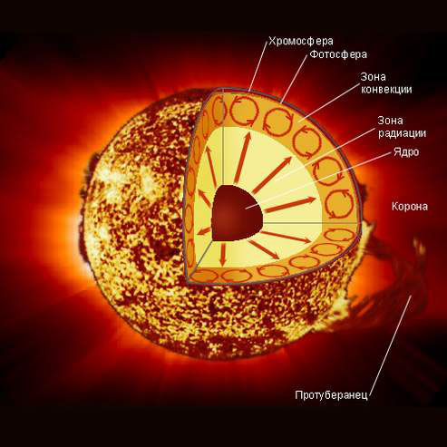

Сонце

Марс

Венера

Нептун

Юпітер

Сатурн

Меркурій

Уран

Земля

Плутон

Головна

Сонце
Центральне тіло нашої планетної системи – Сонце. Утіленням Сонця в грецькій міфології був бог Апполон. У надрах Сонця за температури в десятки мільонів градусів Цельсія та величезного тиску відбуваються так звані термоядерні реакції. Вони супроводжуються виділенням великої кількості енергії. Щосекунди Сонце випромінює таку кількість тепла, якого б вистачило розтопити шар льоду заввишки тисячу кілометрів. Термоядерні реакції продовжуватимуться, поки в ядрі Сонця не вичерпаються запаси Гідрогену. Нині вони складають близько 60 % маси Сонця. Такої кількості вистачить щонайменше на кілька десятків мільярдів років.
Наше Сонце – джерело не тільки тепла та світла. Його зовнішні зони – фотосфера, хромосфера та корона – випромінюють потоки невидимих